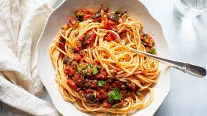

Pasta Recipe
Original Recipe

Ingredients:
- 1 pound tomatos
- 1 pound ground beef
- 1/2 cup onion
- 1/2 cup garlic
- 1/2 cup tomato sauce
- 1/2 cup tomato paste
- 1/2 cup water
- 1/2 cup bread crumbs
- 1/2 cup mozzarella cheese
- 1/2 cup parmesan cheese
- 1/2 cup basil
- 1/2 cup oregano
- 1/2 cup salt
- 1/2 cup pepper
- 1/2 cup olive oil
Directions:
- Preheat oven to 350 degrees F.
- In a large bowl, combine tomatos, ground beef, onion, garlic, tomato sauce, tomato paste, water, bread crumbs, mozzarella cheese, parmesan cheese, basil, oregano, salt, and pepper.